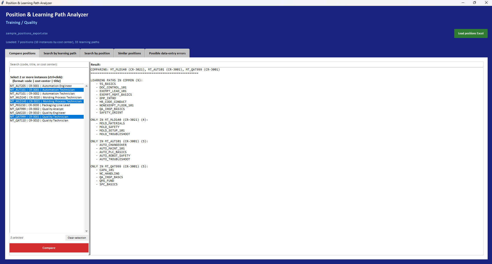
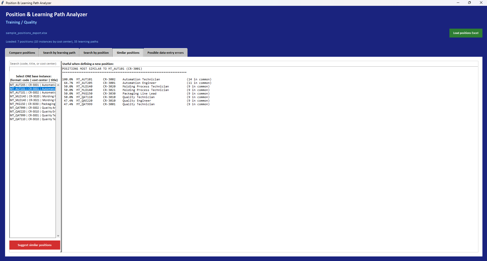
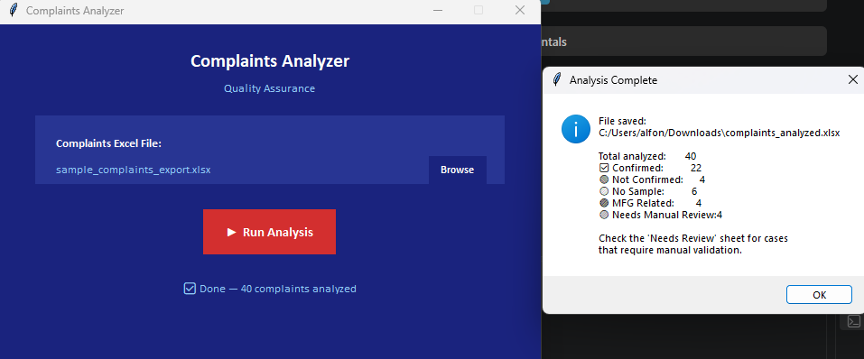
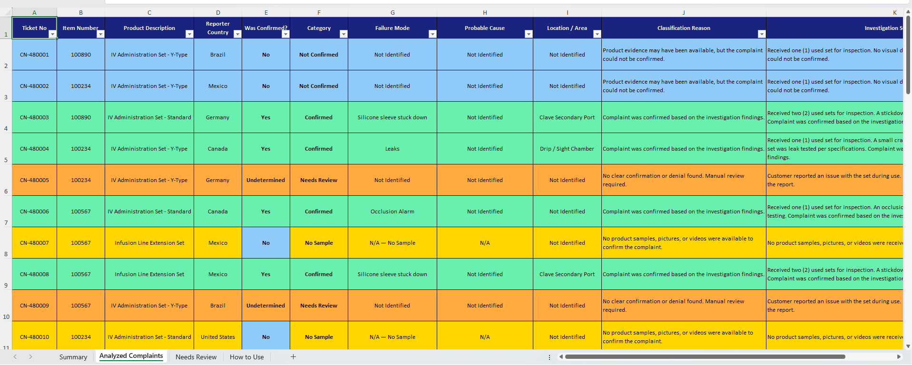
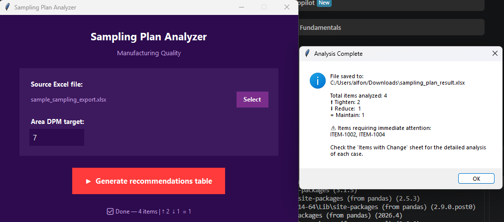
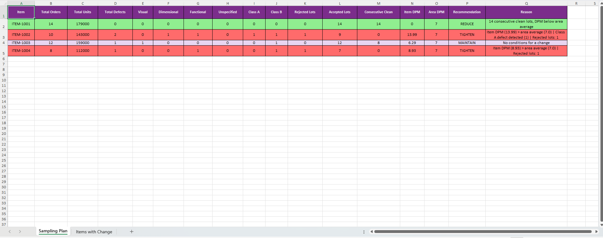
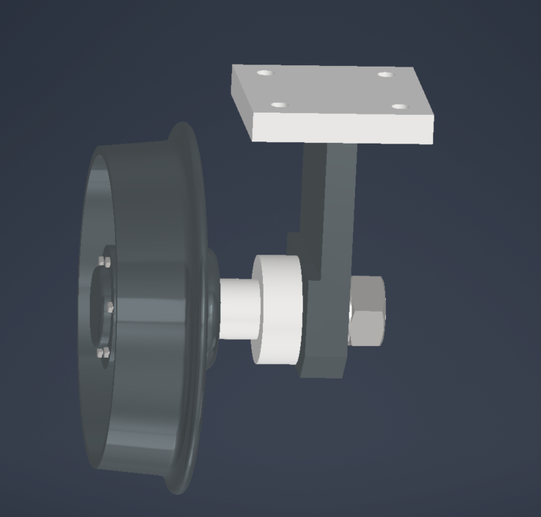
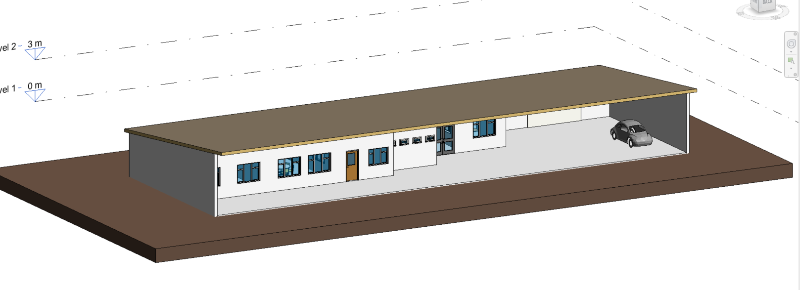

I build practical engineering solutions at the intersection of automation, data, AI, and manufacturing quality — using code and AI as tools inside engineering problems, not as an end in themselves.
Final-year Mechatronics Engineering student (Universidad Fidélitas, coursework completing December 2026), currently interning in Quality/Manufacturing at a medical device company. The projects below are what I've built there.
Download CV (PDF)Training kept its position-to-learning-path data in one huge Excel export, laid out in repeating visual blocks instead of clean rows — so answering something as simple as "which positions use this learning path?" meant scrolling and searching by hand through thousands of lines.
I built a desktop tool that reads that export once and turns it into an actual queryable dataset, with five ways to work with it: compare positions side by side, search by learning path, search by position, find similar positions when defining a new role, and flag likely data-entry typos.
The part I'm most proud of: a position code alone isn't a unique identity — the same code can carry a completely different set of learning paths depending on its cost center. I found this by testing against real data, where one code showed up across 25 cost centers with 21 different learning-path combinations. So every lookup in the tool is built around the pair (position code, cost center), not the code by itself.




Closed complaint tickets came with a free-text investigation summary that someone had to read and manually tag with a confirmation status, failure mode, and probable cause — one at a time, month after month.
I built a rule-based tool that reads each summary and classifies it with keyword matching, then writes a clean, color-coded Excel report. What used to be a slow, one-by-one manual read-through now runs in the time it takes to open the file.
Deciding whether an item's inspection sampling level should tighten, relax, or stay the same meant manually cross-checking defect rates, defect classes, and rejected-lot history for every item, every period.
This tool ingests the raw data, calculates DPM and the rest per item, and applies a defined set of rules to recommend Tighten / Reduce / Maintain — then writes out, in plain language, exactly why each flagged item got that call. A review that used to take a while going item by item in Excel is now generated in one pass.


An AI agent that helps QMR owners draft and improve their quarterly conclusion comments per metric — checking each comment against defined targets (training completion, PM compliance, DPM, complaint rate) and returning a status, target gap, and a proposed comment, rather than a generic write-up.
Reframed after stakeholder feedback to assess audit readiness the way an inspector would, not just whether a metric trended up or down.
An agent that reviews CAPA investigation packages against ISO 13485, FDA 21 CFR 820, and MDSAP — returning a structured assessment (strengths, gaps, root-cause verdict, audit-readiness rating, top recommendations) instead of a summary.
Shaped its instructions and knowledge base; iterated it from a fixed section template into a generalized reviewer that reads whatever sections are present in a given investigation, working only from the evidence actually submitted.
Suppliers fill out an 11-page Supplier Corrective Action Request form, section by section. I put together a series of short instructional videos that walk through it — screen-recorded over the real form, with AI-generated voiceover, auto-captions, synced zoom into each field, and callouts for common mistakes.
Final CAD project: modeled a 13-part industrial caster wheel assembly in Autodesk Inventor directly from a technical drawing set — shaft with dual ISO metric threads, stepped mounting bracket, spool-shaped end cap, wheel, and standard hardware from Content Center — then built the full assembly, exploded view, and 2D drawing set with BOM.

Modeled a residential building in Revit, including levels, walls, openings, and interior layout.

| PROGRAMMING | Python (pandas, openpyxl, Tkinter), rule-based NLP, MATLAB |
| DATA & BI | Power BI, Excel, Oracle data extraction |
| AI TOOLING | Microsoft Copilot Studio — agent design, prompt engineering, knowledge base curation |
| CAD | Autodesk Inventor, Revit, AutoCAD, Multisim, Tinkercad, Proteus |
| QUALITY SYSTEMS | ISO 13485, FDA 21 CFR 820, MDSAP, ISO 9001, SIPOCs, FMEAs, root cause analysis |
| CERTIFICATIONS | Certified ScrumMaster, Lean Six Sigma Yellow Belt |
| LANGUAGES | Spanish (native), English (C1), German (B2), French (B1) |